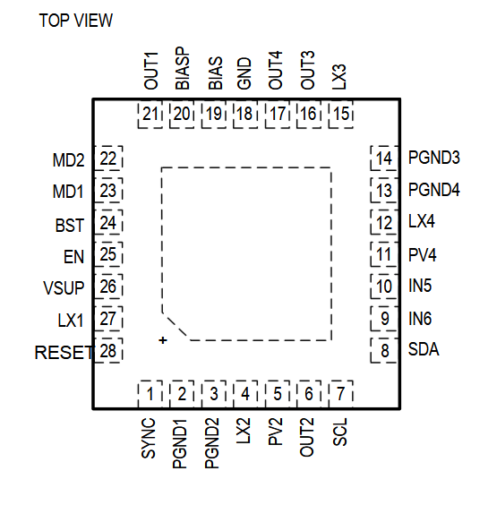

MAX20430

Pin Description
| PIN | NAME | FUNCTION |
|---|---|---|
| 1 | SYNC | SYNC Input. Connect SYNC to BIAS for a 2.1MHz switching frequency. Connect SYNC to an external clock if a different switching frequency is required. |
| 2 | PGND1 | Power Ground for OUT1. Connect all PGND pins together. |
| 3 | PGND2 | Power Ground for OUT2. Connect all PGND pins together. |
| 4 | LX2 | Inductor Connection for Channel 2. Connect LX2 to the switched side of the inductor. |
| 5 | PV2 | OUT2 Power Supply Input. This must be connected to OUT1 and bypassed with a 4.7μF ceramic capacitor. |
| 6 | OUT2 | OUT2 Voltage Sense Input |
| 7 | SCL | I2C Clock Input |
| 8 | SDA | I2C Data I/O |
| 9 | IN6 | Voltage Monitor Input 6. Connect an external supply that is to be monitored to this input. The OV6/UV6 violation can be mapped to the RESET pin. |
| 10 | IN5 | Voltage Monitor Input 5. Connect an external supply that is to be monitored to this input. The OV5/UV5 violation can be mapped to the RESET pin. |
| 11 | PV4 | OUT4 Power Supply Input. This must be connected to OUT1 and bypassed with a 4.7μF ceramic capacitor. |
| 12 | LX4 | Inductor Connection for Channel 4. Connect LX4 to the switched side of the inductor. |
| 13 | PGND4 | Power Ground for OUT4. Connect all PGND pins together. |
| 14 | PGND3 | Power Ground for OUT3. Connect all PGND pins together |
| 15 | LX3 | Inductor Connection for Channel 3. Connect LX3 to the switched side of the inductor. |
| 16 | OUT3 | OUT3 Voltage Output |
| 17 | OUT4 | OUT4 Voltage-Sense Input |
| 18 | GND | Ground |
| 19 | BIAS | High voltage LDO output, regulates at 5V. Connect a 2.2uF ceramic capacitor from BIAS to GND. |
| 20 | BIASP | Noisy high voltage LDO output, regulates at 5V. Connect a 2.2μF ceramic capacitor from BIASP to GND. After boost converter finishes softstart, this pin connects to OUT3. |
| 21 | OUT1 | OUT1 Voltage Sense Input |
| 22 | MD2 | Mount ID Input 2 |
| 23 | MD1 | Mount ID Input 1 |
| 24 | BST | Bootstrap Capacitor Connection. Connect a 0.1μF ceramic capacitor from BST to LX1. |
| 25 | EN | Active-High Enable Input. Drive EN HIGH for normal operation. The IC will power sequence all outputs as factory programmed. |
| 26 | VSUP | IC Supply Input. Connect a 4.7μF or larger ceramic capacitor from VSUP to PGND1. |
| 27 | LX1 | Inductor Connection for Channel 1. Connect LX1 to the switched side of the inductor. |
| 28 | RESET | Open-Drain Reset Output. This output remains low for the programmed hold time after all mapped outputs have reached their regulation level (see the Electrical Characteristics table). To obtain a logic signal, pull up RESET with an external resistor. |
| - | EP | Connect the exposed pad to the ground plane. This is the main path for thermal transfer. |